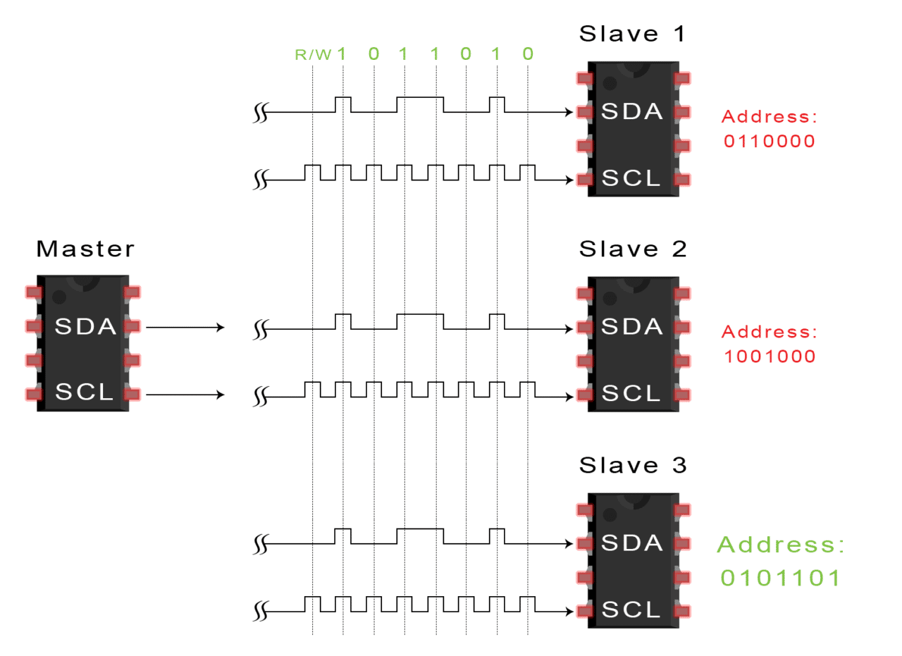

Endpoints of Intelligent Networked System
(Press ? for help, n and p for next and previous slide; usage hints)
Introduction
Core Questions
- What is a transducer/sensor/actuator?
- What is a passive/active sensor?
- What types electrical phenomena can be leveraged for sensing purpose?
Learning Objectives
- Explain notion of transducer/sensors/actuator
- Explain self-generating/modulating sensors
- Explain the conversion of pressure/thermal energy/light into electrical phenomenon.
Table of Contents
Sensors Overview
Classification of Sensors
Basic Terminology
- Transducer: a device which converts one form of energy to another
- Sensor: a transducer that converts a physical phenomenon into an electrical signal.
- an interface from the physical world to the cyber world.
- Actuator: a transducer that converts an electrical signal to a physical phenomenon
- an interface from the cyber world to the physical world.
Classification of Sensors
| Criterion | Classes | Example |
| Power supply | Modulating | Thermistor |
| Generating | Thermocouple | |
| Output signal | Analog | Potentiometer |
| Digital | Position encoder | |
| Operating mode | Deflection | Deflection accelerometer |
| Null | Servo-accelerometer |
Operating Mode
- Deflection
- The measured quantity produces a physical effect
- Generates an apposing effect which can be measured
- Faster
- Null
- Applies a counter-force
- To balance the deflection from the null point (balance condition)
- Can be more accurate but slow
Power Supply
- Modulating
- Also known as Active Sensors
- They need auxiliary power to perform functionality
- Sensitivity can be controlled
- Self-Generating
- Also known as Passive Sensors
- They derive the power from the input
Sensor-to-Signal Interface
- Action of environment on sensor changes an electrical parameter that we can measure
- resistance changes
- capacitance changes
- inductance changes
- Action of environment on a sensor causes it to generate an electrical signal directly
- voltage source
- current or charge source
Electrical Phenomena
- Resistive
- Capacitive
- Inductive
- Piezo-electric
Resistance-based Devices
Resistance of the material depends on the length, area and resistivity as:
“Wheatstone Bridge” by Rhdv under CC BY-SA 3.0; from Wikipedia
\[R = \rho\frac{L}{A}.\]
- If any one of the terms changes, it affects resistance
- The most common circuit used to measure the change in resistance is a Wheatstone bridge
If voltage is \(0\), then
“Wheatstone Bridge” by Rhdv under CC BY-SA 3.0; from Wikipedia
\[R_x = R_3 R_2 / R_1.\]
- Otherwise if the resistance of the voltmeter is high, then
\[V_G = \left(\frac{R_2}{R_1+R_2} - \frac{R_x}{R_x+R_3}\right)V_s. \]
Capacitance-based Devices
For plate capacitor, the capacitance depends on the length, area and the permittivity of the dielectric material between the plates of the capacitor:

“Plate Capacitor” by Fabian_R under CC BY-SA 3.0; from Wikipedia

\[C = \epsilon\frac{A}{d}.\]
- For vacuum, \(\epsilon_0 = 8.85\times 10^{-12}F/m.\)
- Same geometrical factors as resistive sensors
- “small capacitor” is ~ 100 pF (p = pico = \(10^{-12}\))
Resistive vs Capacitive touchscreen
- Capacitive touchscreen, which measures distortion in parasite capacitance, is now ubiquitous reliable and stable.

Inductive Effects
- Inductive devices are more-or-less miniature LVDTs
- Linear Variable Displacement Transducer: a displacement measuring instrument

Magnetic Effects
- Magneto-resistance:
- recent development of “giant” and “colossal” magnetoresistance materials may hold some promise
- 2017 Nobel Prize in physics
- Potential use in hard drives


- Hall effect: the production of a voltage difference (the Hall voltage) across an electrical conductor, transverse to an electric current in the conductor and to an applied magnetic field perpendicular to the current.
Hall effect switches are in common use in computer keyboards
“Hall Effect Sensor” by FraunhoferIIS under CC BY-SA 4.0; from Wikipedia
Piezo- and Pyro-electric Devices
- Piezo- (pressure) and pyro- (heat) electricity are always coupled
- due to separation of electrical charges in the material’s crystalline arrangement
- electric dipoles at the molecular level
- high voltage poling to macroscopically align dipoles
- “electrets” made by poling various waxy mixtures

Piezoelectricity

- Can get very high voltages (enough to spark across ~ 1 mm) in response to impact
- 1 cubic centimeter of quartz with 2 kN of correctly applied force can produce a voltage of 12500 V
- Sensor: Pressure to voltage
- Acutator: Voltage to deformation
- Due to leakage, effect is transient
Practical Piezo-Electric Materials
- Quartz (cut along particular crystal axes to maximize piezo- and minimize pyro- effects):
- the effect is small but very stable
- Various ceramics, e.g., ZnO, PZT - Lead Zirconate Titanate (piezoelectric ceramic material)
- Esp. by deposition on micro- and mini- fabricated devices
- SAW (surface acoustic wave) devices
- Plastics (e.g., polyvinylidene difluoride PDVF )
- (apparently) enormous quantities are used in submarine sonar transducers
Signal Processing
Signal Conditioning
- Signal conditioning is the manipulation of an analog signal in such a way that it meets the requirements of the next stage for further processing.
- Filter for expected frequency regime
- Subtract DC offset (“zeroing”)
- Amplify or attenuate signal (“scaling”)
- Linearize relationship between measurand and observed electrical parameter
- usually done in software after ADC
Analog-to-Digital Converter (ADC)
- Many different principles
- Often integrated with microcontrollers
- in some types, e.g., “successive approximation”, the CPU participates in the conversion process
- Normally, want to avoid this
- All involve trade-offs of speed (conversion time), resolution (number of bits) and cost
Flash A/D converter
Pros:
- Fastest ADC
- Suitable for applications that requires large bandwidth: image, video sensors
Cons:
- High power
- Large die/high cost
- Limited Resolution
Successive Approximation A/D converter

Pros:
- High accuracy
- Low power consumption
- Low cost
Cons:
- Low speed
Basic Sensors
Pressure Sensors
- Transduces pressure into electrical quantity
- Pressure exerts force which can be converted to electrical voltage using various methods
- Types
- Piezo-resistive sensor
- Capacitive sensor
- Piezoelectric sensor
Piezo-resistive Strain Gauges
- Based on the variation of resistance of a material when mechanical stress is applied
- Made of alloys like constantan, nichrome and also semiconductors
- Can be bonded or un-bonded
- Pros:
- Silicon strain gauges can be very sensitive to pressure changes (2kPa)
- Metal sensing element are more durable and can withstand high temperature
- Cons: Consumes power

Capacitive Sensor
- Capacitive diaphragms
- Diaphragm acts as one plate of capacitor
- The stress changes the space between capacitor plates
- Pros:
- Low power consumption, No DC current, Ideal for wireless sensors
- Mechanically simple, durable
- Cons: need careful circuit design to minimize parasite capacitance
Piezoelectric Sensor
- Pros:
- durable, ruggedness, some material can withstand 1,000℃
- low power
- insensitive to electromagnetic interference
- inexpensive
- Cons:
cannot be used for truly static measurements

Microphone
- A microphone is an acoustic to electric transducer that converts sound into an electrical signal.
- Microphones capture sound waves with a thin, flexible diaphragm. The vibrations of this element are then converted by various methods into an electrical signal that is an analogue of the original sound.
- Most microphones in use today use electromagnetic generation (dynamic microphones), capacitance change (condenser microphones) or piezo-electric generation to produce the signal from mechanical vibration .
Condenser (or Capacitor) Microphones
In a condenser microphone, the diaphragm acts as one plate of a capacitor, and the vibrations produce changes in the distance between the plates.

- Pros:
- Low mass of the diaphragm
- flat and extended frequency response
- higher sensitivity and lower noise
- Cons:
- Requires power
- Sensitive to noise
- Easy to break

Dynamic Microphones
- In a dynamic microphone, a small movable induction coil, positioned in the magnetic field of a permanent magnet, is attached to the diaphragm.
When sound enters through the windscreen of the microphone, the sound wave vibrations move the diaphragm.

- When the diaphragm vibrates, the coil moves in the magnetic field, producing a varying current in the coil through electromagnetic induction .

- Pros:
- power producing
- sturdy
- frequency response peaks around 2.5kHz, could be desirable for human voice/music instrument
- Cons:
- Large inertia, low pass
Equal-loudness contours
by Lindosland under Public Domain; from Wikipedia
Piezo Microphone
A piezo microphone uses the phenomenon of piezo-electricity

- Piezoelectric transducers are often used as contact microphones, e.g., amplifying sound from acoustic musical instruments.
- Or to record sounds in unusual environments, such as underwater under high pressure.

Accelerometer
Piezo-resistive

- Proof mass suspended with piezo-resistive beams
- Simple structure, fabrication, and readout (low impedance output)
- Large temp. sensitivity, smaller overall sensitivity than capacitance devices
Capacitive
- Acceleration is measured by the capacitance between a fixed plate and plate on the proof mass.
- Stable (temperature, drift)
- Can be susceptible to EMI .

Piezoelectric Accelerometer
- The principle is to sense the inertial force created by a seismic mass under an acceleration.
Theory behind a piezoelectric accelerometer
by Archiem under CC BY-SA 3.0; from Wikipedia
Temperature Sensors
A temperature sensor detects a change in a physical parameter such as resistance or output voltage that corresponds to a temperature change.
Type of Sensing:
- Contact
- Sensor is in direct physical contact with the object to be sensed
- To monitor solids, liquids, gases over a wide range
- Non-contact
- Interprets the radiant energy of a heat source to energy in electromagnetic spectrum
- Monitor non-reflective solids and liquids
Contact sensing
- Thermocouples
- Thermistors
- Resistance Temperature Detectors (RTD)
- Semiconductor Temperature sensors
- Liquid-in-Glass Thermometers
- Bi-metallic Thermometers
Non-Contact sensing
- Radiation Thermometers
- Infrared Thermal Imaging
- Scanners
- Spot Radiometers
Motion Detector
- Photo Sensor
- Beam of light crossing the room near the door, and a photo sensor on the other side of the room. When the beam breaks, the photo sensor detects the change in the amount of light and rings a bell (or opens garage doors).
- Microwave- Or Ultrasonic-based
- Burst of microwave radio energy and waits for the reflected energy to bounce back.
- When a person moves into the field of microwave energy, it changes the amount of reflected energy or the time it takes for the reflection to arrive.
- The same thing can be done with ultrasonic sound waves, bouncing them off a target and waiting for the echo.
Pyroelectric/Passive Infrared (PIR) Motion Detector
- Humans, having a skin temperature of about 34℃, radiate infrared energy with a wavelength between 9 and 10 micrometers. Therefore, the sensors are typically sensitive in the range of 8 to 12 micrometers
- \(\lambda\) [microns] = 2900 / T [deg K]
- The infrared light bumps electrons off a substrate, and these electrons can be detected and amplified into a signal.
- When a person walks by, the amount of infrared energy in the field of view increases
- Pros: Low power consumption
- Cons:
- low sensitivity
- does not operate when the ambient temperature is close to human temperature
- insensitive to very slow motion of the objects.
Pyroelectric/Passive Infrared (PIR) Motion Detector

Passive Infrared Motion Detector
Humidity Sensors
- Humidity is defined as the water vapor content in the air (or other gases)
- Absolute Humidity
- Ratio of the mass of water vapor to the volume of air or gas
- Relative Humidity
- The ratio of the moisture content of air compared to the saturated moisture level at the same temperature or pressure
- Dew Point
- Temperature and pressure at which gas begins to condense into liquids (like water vapor in air showing up as dew drops)
Relative Humidity Sensor
- Capacitive RH sensor
- Common dielectric material, such as plastic or polymer, has a typical dielectric constant ranging from 2 to 15. the value of the capacitance.
- At normal room temperature, the dielectric constant of water vapor is about 80
- Change in dielectric constant is directly proportional to the relative humidity in the environment
- Very low temperature effect
- 0.2-0.5 pF change in capacitance for 1% RH change, (while the bulk capacitance is between 100 and 500 pF at 50% RH)
- Resistive RH Sensors
- Measure the resistance change
- Inverse exponential relationship to relative humidity
- Mostly used are conductive polymer, salt etc.
- Less accurate but cheaper than capacitive sensor
Absolute Humidity Sensor
Thermal Conductivity Humidity Sensors
- Measure absolute humidity
- Calculate the difference between dry air and air containing water vapor
- One thermistor sealed in dry nitrogen and another exposed to the environment
- Difference in current proportional to humidity
Light and Image Sensing
Light Sensing: Principles
- Photo-chemistry
- Light renders silver halide grains in film “emulsion” “developable ”
- Thermal physics
- Heating effect of incident light heats a sensor that basically measures temperature
- Photo-physics
- Interaction of light with matter frees electrons or promotes them from valence to conduction band.
Photoelectric effect

Figure
Photoelectric effect in a solid
by Ponor under CC BY-SA 4.0; from Wikipedia
- Einstein’s Nobel Prize in 1921 “for his services to Theoretical Physics, and especially for his discovery of the law of the photoelectric effect”
Photodiode response function
- For silicon photodiodes, usually linear, but:
- non-linear when potential well is saturated (over-exposure)
non-linear near zero (due to noise)

Figure

Underexposure Image Noise
- Canon EOS 6D + EF35mm f/1.4L USM
- f/1.4 1/8s ISO 12800
- Captured at Sabah, Malaysia
Underexposure Image Noise
- Canon EOS 6D + EF35mm f/1.4L USM
- f/1.4 1/8s ISO 12800
- Captured at Sabah, Malaysia
Photodiode quantum efficiency (QE)
How many of the incident photons will the photodiode convert into electrons? \[QE = \frac{\#electrons}{\#photons}\]
Fundamental optical performance metric of imaging sensors.
Quantum efficiency of the CCD chip 'PC1' in the Hubble Space Telescope's Wide Field and Planetary Camera WFPC2
by Eric Bajart under CC BY-SA 3.0; from Wikipedia
Image sensors
Charged Coupled Device (CCD): converts electrons to voltage using readout circuitry separate from pixel
- higher sensitivity
- lower noise
Complementary Metal Oxide Semiconductor (CMOS): converts electrons to voltage using per-pixel readout circuitry
- faster read-out
- lower cost
CCD vs CMOS
CCD vs CMOS
- Modern CMOS sensors have optical performance comparable to CCD sensors.
- Most modern commercial and industrial cameras use CMOS sensors.
CMOS sensor (very) simplified layout
Analog front end
analog amplifier (gain):
- gets voltage in range needed by A/D converter.
- accommodates ISO settings.
- accounts for vignetting.
analog-to-digital converter (ADC):
- depending on sensor, output has 10-16 bits.
- most often (?) 12 bits.
look-up table (LUT):
- corrects non-linearities in sensor’s response function (within proper exposure).
- corrects defective pixels.
Color Primer

Is the dress Black/Blue or While/Gold?
Color is complicated!
Color is an artifact of human perception
Spectrum of Visible Light
by Jarvisa under GNU Free Document License; from Wikipedia
- “Color” is not an objective physical property of light (electromagnetic radiation).
- Instead, light is characterized by its wavelength
- What we call “color” is how we subjectively perceive a very small range of these wavelengths
Spectral Power Distribution
- Most types of light “contain” more than one wavelengths.
We can describe light based on the distribution of power over different wavelengths.

Spectral Power Distribution of Multiple Light Sources

Spectral Sensitivity Function (SSF)
- Any light sensor (digital or not) has different sensitivity to different wavelengths.
- This is described by the sensor’s spectral sensitivity function
- When measuring light of a some SPD \(\Phi(\lambda)\), the sensor produces a scalar response:
\[R = \int_\lambda \Phi(\lambda)f(\lambda)d\lambda\]
- Weighted combination of light’s SPD: light contributes more at wavelengths where the sensor has higher sensitivity.
Spectral Sensitivity Function of Human Eye
- The human eye is a collection of light sensors called cone cells.
- There are three types of cells with different spectral sensitivity functions.
- Human color perception is three-dimensional (tristimulus color)
- “short”: \(S = \int_\lambda \Phi(\lambda)S(\lambda)d\lambda\)
- “medium”: \(M = \int_\lambda \Phi(\lambda)M(\lambda)d\lambda\)
- “long”: \(L = \int_\lambda \Phi(\lambda)L(\lambda)d\lambda\)
Spectral Sensitivity Function of Human Eye
Normalized response spectra of human cones
by BenRG under Public Domain; from Wikipedia
Color Filter Arrays
- To measure color with a digital sensor, mimic cone cells of human vision system.
“Cones” correspond to pixels that are covered by different color filters, each with its own spectral sensitivity function

Many different spectral sensitivity functions
Each sensor has its more or less unique, and most of the time secret, SSF.
Makes it very difficult to correctly reproduce the color of sensor measurements.

Spectral Sensitivity Function of Different Camera Sensor

Many different spectral sensitivity functions
Different Camera Sensor Produces Different Colors
The Retinal Color Space
from colormath.color_objects import SepctralColor, XYZColor, RGBColor from colormath.color_conversions import convert_color colors=[] for i in range(340, 840, 10): s = 'tmp = SpectralColor(spec%dnm=1)' % i exec(s) colors.append(tmp) for color in colors:
Chromaticity
CIE 1931 xy color space diagram
by BenRG under Public Domain; from Wikipedia
- Perspective projection of 3D retinal color space to two dimensions.
- The edge corresponds to the color of monochromatic light.
Metamers
- Distinct mixed beams can produce the same retinal color
- These beams are called metamers
- There is an infinity of metamers

{kind=link}
{kind=link}
{kind=link}
{kind=link}
{kind=link}
{kind=link}
{kind=link}
{kind=link}
{kind=link}
{kind=link}
{kind=link}
{kind=link}
{kind=link}
{kind=link}
{kind=link}
{kind=link}
{kind=link}
{kind=link}
{kind=link}
{kind=link}
{kind=link}
Color Gamuts
Comparison of some RGB and CMYK colour gamut on a CIE 1931 xy chromaticity diagram
by BenRG and cmglee under CC BY-SA 3.0; from Wikipedia
{kind=link}
- Why would a color space not be able to reproduce all of the chromaticity space?
- Many colors require negative weights to be reproduced, which are not realizable.
Fun Fact: Impossible Colors
Depth Camera
The camera as a coordinate transformation
- A camera is a mapping from the 3D world to a 2D image
Camera matrix
Ames Room
Triangulation
Sensor to Endpoints Communication
Serial Communication
Motivation
- Connect different systems together
- Two embedded systems
- A PC and an embedded system
- Connect different chips together in the same embedded system
- MCU to peripheral (sensors/actuators)
- MCU to MCU
- Without using a lot of I/O lines
- I/O lines require I/O pads which cost $$$ and size
- I/O lines require PCB area which costs $$$ and size
- Often at relatively low data rates
- But sometimes at higher data rates
Design Consideration
- Number of wires required?
- Asynchronous or synchronous?
- How fast can it transfer data?
- Can it support more than two endpoints?
- Can it support more than one master (i.e. txn initiator)?
UART
- Universal Asynchronous Receiver/Transmitter
- Hardware that translates between parallel and serial forms
- Commonly used in conjunction with communication standards such as EIA, RS-232, RS-422 or RS-485
- The universal designation indicates that the data format and transmission speeds are configurable and that the actual electric signaling levels and methods (such as differential signaling etc.) typically are handled by a special driver circuit external to the UART.
UART Protocol
- Each character is sent as
- a logic low start bit
- a configurable number of data bits (usually 7 or 8, sometimes 5)
- an optional parity bit
- one or more logic high stop bits
- with a particular bit timing (“baud”)
TODO: time
Asynchronous means that data is transferred without support from an external clock signal.
The asynchronous serial protocol has a number of built-in rules - mechanisms that help ensure robust and error-free data transfers. These mechanisms, which we get for eschewing the external clock signal, are:
Data bits, Synchronization bits, Parity bits, and Baud rate.
Through the variety of these signaling mechanisms, you’ll find that there’s no one way to send data serially. The protocol is highly configurable. The critical part is making sure that both devices on a serial bus are configured to use the exact same protocols.
The baud rate specifies how fast data is sent over a serial line. It’s usually expressed in units of bits-per-second (bps). If you invert the baud rate, you can find out just how long it takes to transmit a single bit. This value determines how long the transmitter holds a serial line high/low or at what period the receiving device samples its line.
Baud rates can be just about any value within reason. The only requirement is that both devices operate at the same rate. One of the more common baud rates, especially for simple stuff where speed isn’t critical, is 9600 bps. Other “standard” baud are 1200, 2400, 4800, 19200, 38400, 57600, and 115200.
The higher a baud rate goes, the faster data is sent/received, but there are limits to how fast data can be transferred. You usually won’t see speeds exceeding 115200 - that’s fast for most microcontrollers. Get too high, and you’ll begin to see errors on the receiving end, as clocks and sampling periods just can’t keep up.
I2C
- Feature 3 wire
- SCL(clock)
- SDA(data)
- GND
- All slaves share the same bus wire
- Speed
- Standard: 100 Kbps
- Fast-mode: 400 Kbps
- High-speed mode: 3.4 Mbsp
Master/Slave
- Master is the initiator of data Tx/Rx
- Master drive the SCL
- Slave passively receive command and execute command sent by master

I2C Master and Multiple Slaves
Example: APDS9960/Power over Ethernet HAT
APDS9960
class adafruit_apds9960.apds9960.APDS9960(i2c, *, interrupt_pin=None, address=57, integration_time=1, gain=1, rotation=0)
PoE HAT
Master Write operation
- Master generate specific start signal to inform all devices
- Master put target device address to the I2C bus, ７-bit address + 1-bit read / write flag
- Target device (device with matched address) sends 1bit ACK
- Master see ACK on SDA, continue transmitting data on SDA Line
- Master release SDA after transmitting each byte, waiting for ACK from the target device
- Device sends ACK indicating that data received correctly
- Master continue sending data until end of data
- Master send specific data to inform end of transmission
Master Write operation

Master Write
Master read operation
- Master generate specific start signal to inform all devices
- Master put target device address to the I2C bus, ７-bit address + 1-bit read / write flag
- Master release SDA waiting for target device response.
- Target device (device with matched address) sends ACK
- Master receive data when target response.
- Target send data via SDA, After sending each byte, slave release SDA, waiting for master response.
- Master sends ACK or NAK to response to slave
Master read operation

Master Read
SPI
- Feature 5+ wire
- SCLK(clock)
- MOSI(Master out Slave in)
- MISO(Master in Slave out)
- SS(Slave Select)
- GND
- Typical Speed: 50 Mbps
{kind=link}
Time Diagram
SPI Bus Timing Diagram
by Cburnett under CC BY-SA 3.0; from Wikipedia
{kind=link}
Multiple Slaves
SPI Single Master and Multiple Slaves
by Cburnett under CC BY-SA 3.0; from Wikipedia
{kind=link}
Comparison between UART/I2C/SPI
| UART | I2C | SPI |
| Single Slave | Multiple Slaves | Multiple Salves |
| Full Duplex | Half Duplex | Full Duplex |
| Tx, Rx | SDA, SCL | SCLK, MOSI, MISO, SS(mutilple) |
| Up to 115.2k | 3.4 Mbsp | ~ 50 Mbps |
Other Communication Method
- Parallel
- Infiband (up to 1000G for 4-link XDR)
- USB 3.x (up to 20G for USB 3.2 Gen 2x2)
- Ethernet (10M/100M/1G/10G)
- Camera Interface
- …
- Wireless
- Will be covered in the next lecture
Advanced sensors
Ultrasonic
Optical Microcavity
Energy management
Power Management
Power Budget
- Active sensor power
- Frequency of data collection
- Wireless radio communication strength and power
- Frequency of communication
- Microprocessor or microcontroller power as a function of core frequency
- Passive component power
- Energy loss from leakage or power supply inefficiency
- Power reserve for actuators and motors
Example: TI SensorTag CC2650
For example, the TI SensorTag CC2650 has the following power characteristics:
- Standby mode: 0.24 mA
- Running with all sensors disabled: 0.33 mA
- Sensors enabled
- Temperature sensor: 0.84 mA
- Light sensor: 0.56 mA
- Accelerometer and gyros: 4.68 mA
- Barometric sensor: 0.5 mA
- Bluetooth LE
Example: TI SensorTag CC2650
| State | Time [µs] | Current [mA] | Time * Current |
| Wake Up & Pre-processing | 1283.89 | 3.10 | 3981.68 |
| Preparation for Recieve | 394.22 | 3.58 | 1409.55 |
| Recieve (RX) | 461.33 | 6.69 | 3085.90 |
| RX to TX transition | 109.22 | 5.21 | 568.97 |
| Transmit (TX) | 84.39 | 7.34 | 619.44 |
| Post-Processing | 853.44 | 2.62 | 2239.63 |
| Total time of connection event [µs] | 3186.50 | ||
| Total time * current [µs*mA] | 11905.2 | ||
| Average Current draw [µA] | 3736.1 |
The TI SensorTag uses a standard CR2032 coin cell battery rated at 240 mAh. Therefore, the maximum life is expected to be about 44 hours.
power management practices
Many power management practices can employed, such as
- New material: clock gating components not being used in silicon
- reducing the clock rates of processors or microcontrollers
- adjusting the sensing frequency and broadcast frequency
- back-off strategies to reduce communication strength
- and various levels of sleep modes.